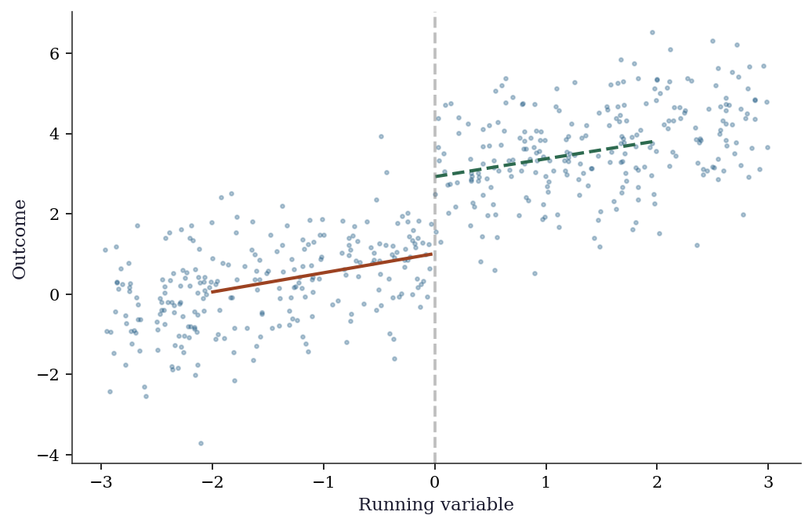
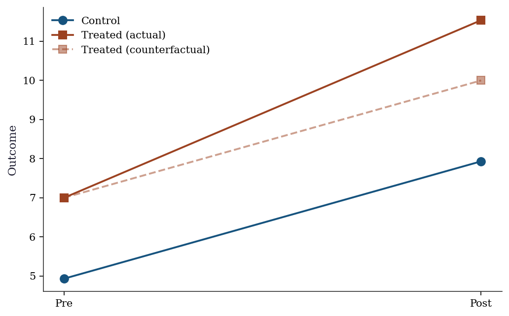
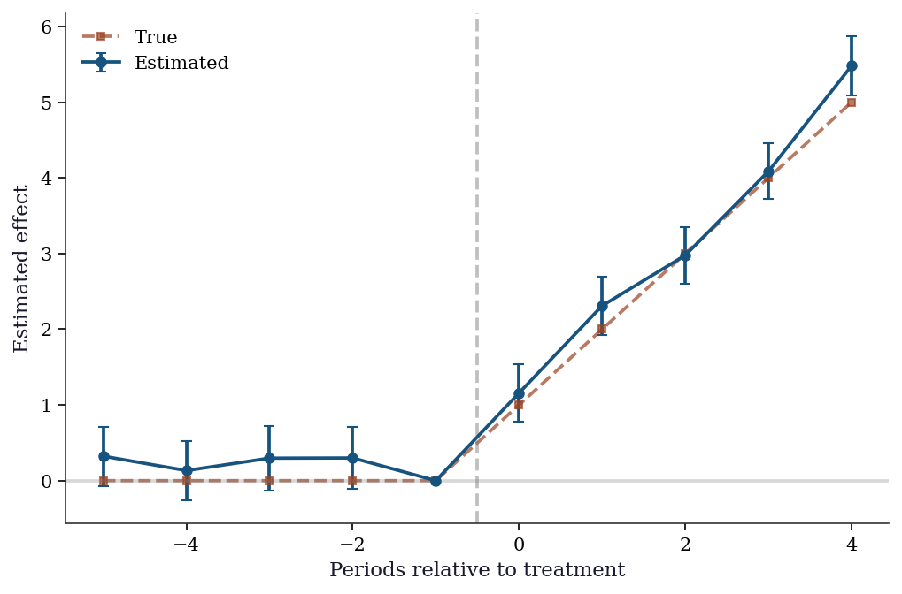
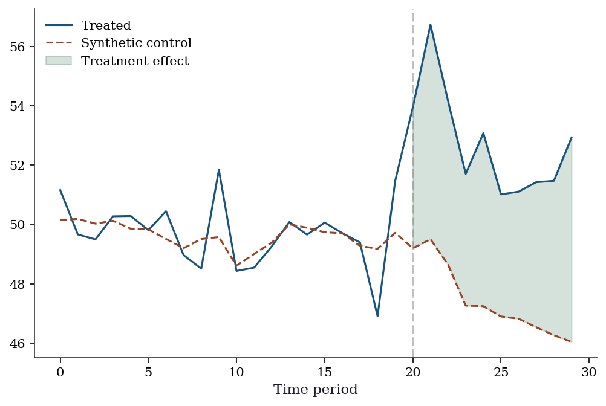
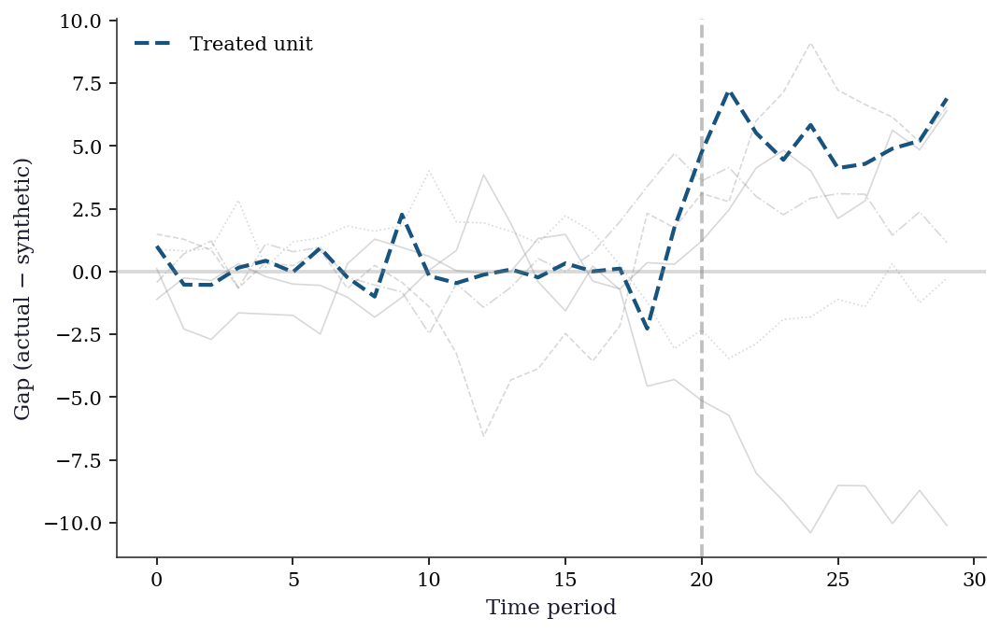
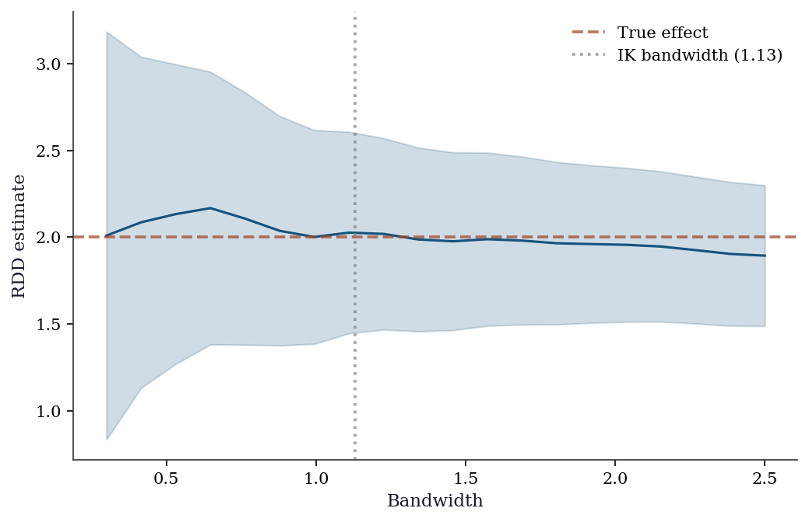
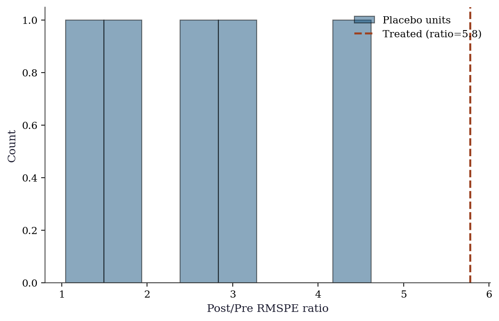

import numpy as np
import matplotlib.pyplot as plt
import pandas as pd
import statsmodels.api as sm
from scipy import stats
plt.style.use('assets/book.mplstyle')
rng = np.random.default_rng(42)22 Quasi-Experimental Designs: RDD, DiD, and Synthetic Control
23 Motivation
Chapter 21 required unconfoundedness: treatment assignment is random conditional on observables. When unconfoundedness fails (unobserved confounders exist), we need designs that create quasi-randomization:
- RDD: Treatment assigned by whether a running variable crosses a cutoff (test score → scholarship, age → eligibility)
- DiD: Compare treated and control groups before and after an intervention, assuming parallel trends
- Synthetic control: Construct a weighted combination of control units that matches the treated unit’s pre-treatment trajectory
All three exploit specific design features rather than assuming away confounders.
24 Mathematical Foundation
24.1 RDD: why the cutoff creates quasi-randomization
In a sharp RDD, treatment is assigned by whether a running variable \(X_i\) crosses a cutoff \(c\): \(D_i = \mathbb{1}(X_i \geq c)\). For example, students with test scores above 80 get a scholarship; those below don’t.
The key insight: Units just above and just below the cutoff are nearly identical — they differ by a tiny amount of the running variable. A student with a score of 80.1 is essentially the same as a student with 79.9, but one gets the scholarship and the other doesn’t. This creates a quasi-random experiment at the cutoff.
The causal effect at the cutoff is: \[ \tau_{\text{RDD}} = \lim_{x \downarrow c} \mathbb{E}[Y \mid X=x] - \lim_{x \uparrow c} \mathbb{E}[Y \mid X=x]. \tag{24.1}\]
What RDD does and doesn’t identify: RDD identifies the local treatment effect at the cutoff — for people whose running variable is right at \(c\). It does NOT identify the effect for people far from the cutoff. A scholarship might help marginal students (near the cutoff) differently from top students (far above it).
How to estimate it: Fit separate regressions on each side of the cutoff (local linear regression) and measure the jump. The bandwidth determines how far from the cutoff you include data: wider bandwidth = more data but more bias (the relationship may be nonlinear); narrower bandwidth = less bias but more variance.
24.1.1 Identification proof sketch
The RDD estimand relies on a continuity assumption. Suppose the potential outcomes \(\mathbb{E}[Y(0) \mid X=x]\) and \(\mathbb{E}[Y(1) \mid X=x]\) are both continuous functions of \(x\) at the cutoff \(c\). Then:
\[ \lim_{x \downarrow c} \mathbb{E}[Y \mid X=x] = \lim_{x \downarrow c} \mathbb{E}[Y(1) \mid X=x] = \mathbb{E}[Y(1) \mid X=c], \]
because everyone just above \(c\) is treated, and similarly \(\lim_{x \uparrow c} \mathbb{E}[Y \mid X=x] = \mathbb{E}[Y(0) \mid X=c]\). The jump at the cutoff is therefore:
\[ \tau_{\text{RDD}} = \mathbb{E}[Y(1) - Y(0) \mid X = c]. \]
This is a local estimand: it tells you the treatment effect only for units at the cutoff. Extrapolating to units far from the cutoff requires additional assumptions (constant effects, parametric models) that the design alone does not justify. The from-scratch implementation below makes this concrete: the local linear regression literally restricts to a narrow window around \(c\).
24.1.2 Fuzzy RDD as instrumental variables
In a sharp RDD, crossing the cutoff perfectly determines treatment: \(\Pr(D=1 \mid X=c+\epsilon) = 1\) and \(\Pr(D=1 \mid X=c-\epsilon) = 0\). But in many applications, the cutoff creates a jump in the probability of treatment without making it deterministic. Students above a scholarship cutoff are eligible but may not all enroll; patients above a risk threshold are recommended surgery but some decline. This is a fuzzy RDD.
In a fuzzy RDD, the cutoff indicator \(Z_i = \mathbb{1}(X_i \geq c)\) serves as an instrument for the endogenous treatment \(D_i\). The fuzzy RDD estimand is:
\[ \tau_{\text{fuzzy}} = \frac{\lim_{x \downarrow c} \mathbb{E}[Y \mid X=x] - \lim_{x \uparrow c} \mathbb{E}[Y \mid X=x]} {\lim_{x \downarrow c} \mathbb{E}[D \mid X=x] - \lim_{x \uparrow c} \mathbb{E}[D \mid X=x]}. \tag{24.2}\]
This is a Wald estimator — the ratio of the jump in the outcome to the jump in the treatment probability — which is exactly the IV estimand from Chapter 20. The implementation uses 2SLS restricted to observations near the cutoff.
24.1.3 Optimal bandwidth selection
The bandwidth \(h\) controls the bias-variance tradeoff. Too narrow and variance explodes (few observations); too wide and bias dominates (nonlinear relationships get flattened). Imbens and Kalyanaraman (2012) derived the MSE-optimal bandwidth for a local linear estimator:
\[ h_{\text{IK}}^* = C_{\text{IK}} \cdot n^{-1/5}, \]
where \(C_{\text{IK}}\) depends on the curvature of the conditional expectation function on each side of the cutoff and the density of \(X\) at \(c\). The \(n^{-1/5}\) rate reflects the fact that local linear regression is a nonparametric estimator — the bandwidth shrinks with sample size, but slowly enough to keep variance in check.
In practice, the IK bandwidth is computed as:
\[ h_{\text{IK}}^* = C_K \left(\frac{\hat{\sigma}^2(c)}{n \cdot \hat{f}(c) \cdot (\hat{m}''_+(c)^2 + \hat{m}''_-(c)^2)}\right)^{1/5}, \]
where \(\hat{f}(c)\) is the estimated density at the cutoff, \(\hat{m}''_{\pm}(c)\) are estimated second derivatives on each side, \(\hat{\sigma}^2(c)\) is the conditional variance at \(c\), and \(C_K\) is a kernel-specific constant. We implement a simplified version from scratch below.
24.2 DiD: why parallel trends removes confounding
Difference-in-differences compares changes rather than levels:
\[ \tau_{\text{DiD}} = \underbrace{(\bar{Y}_{\text{treated,post}} - \bar{Y}_{\text{treated,pre}})}_{\text{change for treated}} - \underbrace{(\bar{Y}_{\text{control,post}} - \bar{Y}_{\text{control,pre}})}_{\text{change for control}}. \tag{24.3}\]
Why it works: Suppose treated and control groups differ in levels (treated cities are richer) but would have followed the same trend absent treatment (both would have grown at the same rate). The first difference (post - pre) removes the level difference. The second difference (treated change - control change) removes the common trend. What’s left is the treatment effect.
The parallel trends assumption: The control group’s change is what would have happened to the treated group without treatment. This is untestable in the post-period, but you can check for pre-trends: if the two groups had parallel trends before treatment, it is more plausible they would have continued to.
The TWFE problem (Goodman-Bacon, 2021): The standard two-way fixed effects regression \(Y_{it} = \alpha_i + \gamma_t + \tau D_{it} + \varepsilon_{it}\) works perfectly for the simple 2×2 case (two groups, two periods). But when treatment is staggered (different units treated at different times) and effects are heterogeneous (early vs late adopters have different effects), TWFE computes a weighted average of all possible 2×2 comparisons. Some of these comparisons use already-treated units as controls, and the resulting weights can be negative. This can produce an estimate with the wrong sign even when every individual treatment effect is positive.
The fix: Use estimators designed for staggered adoption: Callaway and Sant’Anna (2021) or Sun and Abraham (2021), which only use not-yet-treated units as controls.
24.2.1 Event study specification
An event study estimates treatment effects at each time period relative to treatment onset. The regression model is:
\[ Y_{it} = \alpha_i + \gamma_t + \sum_{k \neq -1} \delta_k \cdot \mathbb{1}(t - G_i = k) + \varepsilon_{it}, \tag{24.4}\]
where \(G_i\) is the period when unit \(i\) is first treated, \(k\) indexes periods relative to treatment (\(k < 0\) is pre-treatment, \(k \geq 0\) is post-treatment), and \(k = -1\) is the omitted reference period. The coefficients \(\delta_k\) have two roles:
- Pre-treatment (\(k < 0\)): These should be approximately zero. If they trend away from zero, parallel trends is violated.
- Post-treatment (\(k \geq 0\)): These estimate the dynamic treatment effect at each post-treatment horizon.
24.2.2 Pre-trends testing pitfalls (Roth 2022)
Testing for pre-trends sounds straightforward: if \(\delta_{-2}, \delta_{-3}, \ldots\) are insignificant, parallel trends holds. But Roth (2022) showed this creates pre-test bias: conditioning on passing the pre-trends test biases the post-treatment estimates. The intuition is selection — among the studies where the pre-test passes, the ones with real parallel-trends violations are overrepresented among those that happened to get small pre-treatment coefficients by chance. The practical takeaway: a non-significant pre-trends test does not validate the design. Report the pre-treatment coefficients honestly; do not condition on them.
24.2.3 Callaway-Sant’Anna group-time ATTs
The Callaway-Sant’Anna estimator defines group-time average treatment effects \(ATT(g, t)\): the effect at time \(t\) for the group first treated at time \(g\). Each \(ATT(g, t)\) is a simple DiD using only not-yet-treated (or never-treated) units as controls:
\[ ATT(g, t) = \mathbb{E}[Y_t - Y_{g-1} \mid G=g] - \mathbb{E}[Y_t - Y_{g-1} \mid C=1], \]
where \(C=1\) indicates the control group. These group-time effects are then aggregated into summary measures (overall ATT, dynamic effects by event time, group-specific effects) using explicit weighting. The key insight is that no already-treated unit ever serves as a control, avoiding the negative-weight problem entirely.
24.3 Synthetic control: the counterfactual as an optimization problem
When you have a single treated unit (one state that passed a law, one company that merged), you cannot compute a simple average of control outcomes. Synthetic control constructs the best possible counterfactual by weighting control units to match the treated unit’s pre-treatment trajectory:
\[ \hat{\mathbf{w}} = \arg\min_\mathbf{w} \|\mathbf{Y}_1^{\text{pre}} - \mathbf{Y}_0^{\text{pre}}\mathbf{w}\|^2 \quad \text{s.t.} \quad \mathbf{w} \geq 0, \quad \sum w_j = 1. \]
The weights \(\hat{w}_j\) tell you: “the counterfactual is 30% of California + 20% of Texas + …” The treatment effect is the gap between the actual outcome and the synthetic control in the post-period.
Why the constraints: Non-negative weights (\(w_j \geq 0\)) and summing to 1 (\(\sum w_j = 1\)) prevent extrapolation. The synthetic control is a convex combination of real units, so it stays within the range of observed data. This is more defensible than regression, which can extrapolate far outside the data.
Connection to optimization (Ch. 3): This is a constrained least-squares problem, solved by scipy.optimize.minimize with LinearConstraint. The optimization theory from Chapter 3 applies directly.
24.3.1 Permutation inference for synthetic control
Standard inference (confidence intervals, \(p\)-values) does not apply to synthetic control — there is only one treated unit, so there is no sampling distribution. Instead, we use permutation inference (Abadie, Diamond, Hainmueller 2010):
- Apply the synthetic control method to each control unit \(j\), pretending it was the treated unit (a “placebo” test).
- For each placebo unit \(j\), compute the ratio of post-treatment RMSPE to pre-treatment RMSPE:
\[ r_j = \frac{\text{RMSPE}_j^{\text{post}}}{\text{RMSPE}_j^{\text{pre}}}. \]
- The \(p\)-value is the fraction of placebo units with a ratio at least as large as the treated unit’s ratio:
\[ p = \frac{1}{J+1} \sum_{j=0}^{J} \mathbb{1}(r_j \geq r_0), \]
where \(r_0\) is the treated unit’s ratio and \(J\) is the number of control units.
Why the ratio: Using the ratio rather than the raw post-treatment RMSPE accounts for pre-treatment fit quality. A control unit with poor pre-fit will have large post-treatment gaps even without any treatment — dividing by pre-RMSPE penalizes these spurious “effects.”
25 Statsmodels / From-Scratch Implementation
25.1 RDD from scratch
In a sharp RDD, treatment is deterministic: everyone above the cutoff gets treated, everyone below does not. We estimate the treatment effect by comparing outcomes just above and just below the cutoff using local linear regression (OLS restricted to observations near the cutoff).
# Simulate sharp RDD: treatment assigned by whether x >= 0
n = 500
x_run = rng.uniform(-3, 3, n) # running variable (e.g., test score)
cutoff = 0
D_rdd = (x_run >= cutoff).astype(int)
# Outcome: continuous at cutoff, treatment adds 2
y_rdd = 1 + 0.5*x_run + 2*D_rdd + rng.standard_normal(n)
# Local linear regression near cutoff
bw = 1.0 # bandwidth
mask = np.abs(x_run - cutoff) <= bw
X_rdd = sm.add_constant(np.column_stack([x_run[mask], D_rdd[mask],
x_run[mask]*D_rdd[mask]]))
rdd_fit = sm.OLS(y_rdd[mask], X_rdd).fit(cov_type='HC1')
print(f"RDD estimate: {rdd_fit.params[2]:.3f} "
f"(SE={rdd_fit.bse[2]:.3f})")
print(f"True effect: 2.0")RDD estimate: 2.016 (SE=0.291)
True effect: 2.0fig, ax = plt.subplots()
ax.scatter(x_run, y_rdd, s=5, alpha=0.3, color="C0")
# Fit separate lines on each side
for side, color in [(x_run < cutoff, "C1"), (x_run >= cutoff, "C2")]:
mask_s = side & (np.abs(x_run) < 2)
fit = np.polyfit(x_run[mask_s], y_rdd[mask_s], 1)
x_grid = np.linspace(x_run[mask_s].min(), x_run[mask_s].max(), 50)
ax.plot(x_grid, np.polyval(fit, x_grid), color=color, linewidth=2)
ax.axvline(cutoff, color="gray", linestyle="--", alpha=0.5)
ax.set_xlabel("Running variable")
ax.set_ylabel("Outcome")
plt.show()
25.2 Local polynomial RDD from scratch
The RDD estimator above used OLS on observations near the cutoff. A proper local polynomial estimator uses kernel weighting — giving more weight to observations closer to the cutoff. This is weighted least squares with a triangular or Epanechnikov kernel.
def local_linear_rdd(y, x, cutoff, bandwidth, kernel='triangular'):
"""Local linear RDD estimator with kernel weighting.
Returns the estimated discontinuity and its HC1 standard error.
"""
mask = np.abs(x - cutoff) <= bandwidth
x_loc = x[mask] - cutoff # center at cutoff
y_loc = y[mask]
d_loc = (x_loc >= 0).astype(float)
# Kernel weights
u = np.abs(x_loc) / bandwidth
if kernel == 'triangular':
w = np.maximum(1 - u, 0)
elif kernel == 'epanechnikov':
w = np.maximum(0.75 * (1 - u**2), 0)
else: # uniform
w = np.ones_like(u)
# WLS: y ~ 1 + x + D + D*x, weighted by kernel
X_mat = np.column_stack([
np.ones(len(x_loc)), x_loc,
d_loc, d_loc * x_loc,
])
W = np.diag(w)
# Weighted OLS: (X'WX)^{-1} X'Wy
XtW = X_mat.T @ W
beta = np.linalg.solve(XtW @ X_mat, XtW @ y_loc)
# HC1 standard errors
resid = y_loc - X_mat @ beta
n_eff = mask.sum()
meat = X_mat.T @ np.diag(w**2 * resid**2) @ X_mat
bread = np.linalg.inv(XtW @ X_mat)
V = bread @ meat @ bread * n_eff / (n_eff - 4)
se = np.sqrt(np.diag(V))
return beta[2], se[2] # treatment coef and SE
tau_hat, se_hat = local_linear_rdd(
y_rdd, x_run, cutoff=0, bandwidth=1.0,
)
print(f"Local linear RDD: {tau_hat:.3f} (SE={se_hat:.3f})")
print(f"True effect: 2.0")Local linear RDD: 2.001 (SE=0.313)
True effect: 2.025.3 IK bandwidth selector from scratch
The Imbens-Kalyanaraman bandwidth requires estimates of the density at the cutoff, the conditional variance, and the second derivatives of the regression function on each side. We implement a simplified version that captures the key ideas.
def ik_bandwidth(y, x, cutoff, kernel='triangular'):
"""Simplified Imbens-Kalyanaraman optimal bandwidth.
Uses a pilot bandwidth to estimate curvature, then
computes the MSE-optimal bandwidth for local linear
regression.
"""
n = len(x)
# Step 1: pilot bandwidth (Silverman rule-of-thumb)
h_pilot = 1.06 * np.std(x) * n**(-0.2)
# Step 2: estimate density at cutoff
f_hat = np.mean(np.abs(x - cutoff) <= h_pilot) / (2 * h_pilot)
# Step 3: estimate conditional variance at cutoff
near = np.abs(x - cutoff) <= h_pilot
if near.sum() < 10:
return h_pilot # fallback
x_near = x[near] - cutoff
y_near = y[near]
X_pilot = sm.add_constant(x_near)
resid_pilot = sm.OLS(y_near, X_pilot).fit().resid
sigma2_hat = np.mean(resid_pilot**2)
# Step 4: estimate curvature (second derivative) on
# each side using a quadratic fit with wider bandwidth
h_curv = 2 * h_pilot
m2_plus, m2_minus = 0.0, 0.0
for sign, store in [(1, 'plus'), (-1, 'minus')]:
if sign == 1:
side = (x >= cutoff) & (x <= cutoff + h_curv)
else:
side = (x < cutoff) & (x >= cutoff - h_curv)
if side.sum() < 5:
continue
xs = x[side] - cutoff
ys = y[side]
Xq = np.column_stack([
np.ones(side.sum()), xs, xs**2,
])
beta_q = np.linalg.lstsq(Xq, ys, rcond=None)[0]
if store == 'plus':
m2_plus = 2 * beta_q[2] # 2nd derivative
else:
m2_minus = 2 * beta_q[2]
# Step 5: IK formula (triangular kernel constant)
C_K = 3.4375 # for triangular kernel
curv = m2_plus**2 + m2_minus**2
if curv < 1e-12:
return h_pilot # curvature too small
h_opt = C_K * (sigma2_hat / (n * f_hat * curv))**0.2
return h_opt
h_ik = ik_bandwidth(y_rdd, x_run, cutoff=0)
print(f"IK optimal bandwidth: {h_ik:.3f}")
# Compare estimates across bandwidths
for h in [0.5, h_ik, 1.0, 1.5, 2.0]:
tau_h, se_h = local_linear_rdd(
y_rdd, x_run, cutoff=0, bandwidth=h,
)
label = " (IK)" if np.isclose(h, h_ik, atol=0.01) else ""
print(f" h={h:.2f}{label}: tau={tau_h:.3f} (SE={se_h:.3f})")IK optimal bandwidth: 1.131
h=0.50: tau=2.112 (SE=0.453)
h=1.13 (IK): tau=2.028 (SE=0.293)
h=1.00: tau=2.001 (SE=0.313)
h=1.50: tau=1.980 (SE=0.259)
h=2.00: tau=1.958 (SE=0.228)25.4 Fuzzy RDD from scratch
When the cutoff creates a jump in the probability of treatment rather than a sharp switch, we have a fuzzy RDD. The estimator is 2SLS restricted to observations near the cutoff — the same IV machinery from Chapter 20, applied locally.
# Simulate fuzzy RDD: cutoff increases treatment probability
# but doesn't determine it perfectly
n_fuzz = 1000
x_fuzz = rng.uniform(-3, 3, n_fuzz)
# Treatment probability jumps from 0.2 to 0.8 at cutoff
p_treat = np.where(x_fuzz >= 0, 0.8, 0.2)
D_fuzz = rng.binomial(1, p_treat)
# Outcome: treatment effect of 3
y_fuzz = (1 + 0.5 * x_fuzz + 3 * D_fuzz
+ rng.standard_normal(n_fuzz))
# Fuzzy RDD via local 2SLS
bw_fuzz = 1.0
mask_f = np.abs(x_fuzz) <= bw_fuzz
x_loc = x_fuzz[mask_f]
y_loc = y_fuzz[mask_f]
D_loc = D_fuzz[mask_f]
Z_loc = (x_loc >= 0).astype(float)
# Stage 1: D ~ Z + x (instrument is cutoff indicator)
X_s1 = sm.add_constant(np.column_stack([Z_loc, x_loc]))
stage1 = sm.OLS(D_loc, X_s1).fit()
D_hat = stage1.fittedvalues
# Stage 2: y ~ D_hat + x
X_s2 = sm.add_constant(np.column_stack([D_hat, x_loc]))
stage2 = sm.OLS(y_loc, X_s2).fit()
# Wald estimator (ratio of jumps)
jump_y = (y_loc[Z_loc == 1].mean()
- y_loc[Z_loc == 0].mean())
jump_D = (D_loc[Z_loc == 1].mean()
- D_loc[Z_loc == 0].mean())
wald = jump_y / jump_D
print(f"Fuzzy RDD (2SLS): {stage2.params[1]:.3f}")
print(f"Fuzzy RDD (Wald): {wald:.3f}")
print(f"First stage jump: {jump_D:.3f}")
print(f"True effect: 3.0")Fuzzy RDD (2SLS): 2.760
Fuzzy RDD (Wald): 3.783
First stage jump: 0.629
True effect: 3.025.5 DiD from scratch
Difference-in-differences compares the change in outcomes for the treated group to the change for the control group. The identifying assumption is that both groups would have followed the same trend absent treatment (parallel trends). The treatment effect is the difference between the actual and counterfactual changes.
# Simulate a simple 2x2 DiD: 2 groups × 2 time periods
n_did = 200
treated = np.repeat([0, 1], n_did // 2)
post = np.tile([0, 1], n_did // 2)
# Parallel trends + treatment effect
y_did = (5 + 2*treated + 3*post + 1.5*treated*post
+ rng.standard_normal(n_did))
# DiD estimate
y00 = y_did[(treated==0) & (post==0)].mean()
y01 = y_did[(treated==0) & (post==1)].mean()
y10 = y_did[(treated==1) & (post==0)].mean()
y11 = y_did[(treated==1) & (post==1)].mean()
did_est = (y11 - y10) - (y01 - y00)
print(f"DiD estimate: {did_est:.3f} (true=1.5)")
print(f"Means: Y00={y00:.2f}, Y01={y01:.2f}, Y10={y10:.2f}, Y11={y11:.2f}")
# Equivalent regression
X_did = sm.add_constant(np.column_stack([treated, post, treated*post]))
did_reg = sm.OLS(y_did, X_did).fit(cov_type='HC1')
print(f"Regression DiD: {did_reg.params[3]:.3f} (SE={did_reg.bse[3]:.3f})")DiD estimate: 1.538 (true=1.5)
Means: Y00=4.93, Y01=7.93, Y10=7.00, Y11=11.53
Regression DiD: 1.538 (SE=0.265)fig, ax = plt.subplots()
ax.plot([0, 1], [y00, y01], 'o-', color="C0", markersize=8, label="Control")
ax.plot([0, 1], [y10, y11], 's-', color="C1", markersize=8, label="Treated (actual)")
ax.plot([0, 1], [y10, y10 + (y01-y00)], 's--', color="C1", alpha=0.5,
markersize=8, label="Treated (counterfactual)")
ax.set_xticks([0, 1]); ax.set_xticklabels(["Pre", "Post"])
ax.set_ylabel("Outcome"); ax.legend()
plt.show()
25.6 Event study DiD from scratch
An event study specification estimates treatment effects at each period relative to the treatment date. This is the workhorse diagnostic for DiD: pre-treatment coefficients should be zero (validating parallel trends), and post-treatment coefficients trace out the dynamic effect.
# Simulate panel: 50 units, 10 periods, treatment at t=5
n_units, n_periods = 50, 10
treat_period = 5
n_treated = 25
# Unit and time fixed effects
alpha_i = rng.standard_normal(n_units) * 2
gamma_t = np.linspace(0, 3, n_periods)
# Build panel
unit_id = np.repeat(np.arange(n_units), n_periods)
time_id = np.tile(np.arange(n_periods), n_units)
treated_unit = (unit_id < n_treated).astype(float)
post = (time_id >= treat_period).astype(float)
# Dynamic treatment effects: grow over post-treatment periods
true_effects = np.zeros(n_periods)
for t in range(treat_period, n_periods):
true_effects[t] = 1.0 * (t - treat_period + 1)
# Outcome
y_panel = (alpha_i[unit_id] + gamma_t[time_id]
+ true_effects[time_id] * treated_unit
+ rng.standard_normal(n_units * n_periods) * 0.5)
# Event study regression: create dummies for each relative
# period k, omitting k=-1 as reference
event_time = time_id - treat_period # relative to treatment
ref_period = -1
# Build design matrix with unit FE, time FE, event dummies
# Only event dummies for treated units
event_periods = sorted(set(event_time))
event_periods = [k for k in event_periods if k != ref_period]
X_cols = {}
# Unit dummies (omit first)
for i in range(1, n_units):
X_cols[f'unit_{i}'] = (unit_id == i).astype(float)
# Time dummies (omit first)
for t in range(1, n_periods):
X_cols[f'time_{t}'] = (time_id == t).astype(float)
# Event-time dummies for treated units
for k in event_periods:
X_cols[f'event_{k}'] = (
(event_time == k) & (treated_unit == 1)
).astype(float)
X_es = sm.add_constant(
pd.DataFrame(X_cols)
)
es_fit = sm.OLS(y_panel, X_es).fit(cov_type='HC1')
# Extract event-study coefficients
es_coefs = []
es_ses = []
for k in event_periods:
idx = list(X_es.columns).index(f'event_{k}')
es_coefs.append(es_fit.params.iloc[idx])
es_ses.append(es_fit.bse.iloc[idx])
es_coefs = np.array(es_coefs)
es_ses = np.array(es_ses)fig, ax = plt.subplots()
# Insert the reference period (coef=0, se=0) for plotting
plot_periods = sorted(event_periods + [ref_period])
plot_coefs = []
plot_ses = []
for k in plot_periods:
if k == ref_period:
plot_coefs.append(0.0)
plot_ses.append(0.0)
else:
i = event_periods.index(k)
plot_coefs.append(es_coefs[i])
plot_ses.append(es_ses[i])
plot_coefs = np.array(plot_coefs)
plot_ses = np.array(plot_ses)
ax.errorbar(
plot_periods, plot_coefs,
yerr=1.96 * plot_ses,
fmt='o-', color='C0', capsize=3, markersize=5,
label='Estimated',
)
ax.plot(
plot_periods,
[true_effects[treat_period + k] if k >= 0 else 0
for k in plot_periods],
's--', color='C1', markersize=4, alpha=0.7,
label='True',
)
ax.axvline(-0.5, color='gray', linestyle='--', alpha=0.5)
ax.axhline(0, color='gray', linestyle='-', alpha=0.3)
ax.set_xlabel("Periods relative to treatment")
ax.set_ylabel("Estimated effect")
ax.legend()
plt.show()
25.7 Synthetic control from scratch
from scipy.optimize import minimize
# 1 treated unit, 5 control units, 20 pre + 10 post periods
n_pre, n_post = 20, 10
n_control = 5
# Pre-treatment: treated and controls have similar trends
Y_control_pre = np.cumsum(rng.standard_normal((n_pre, n_control)), axis=0) + 50
Y_treated_pre = (Y_control_pre @ np.array([0.3, 0.25, 0.2, 0.15, 0.1])
+ rng.standard_normal(n_pre))
# Post-treatment: treated diverges
Y_control_post = (Y_control_pre[-1:] +
np.cumsum(rng.standard_normal((n_post, n_control)), axis=0))
Y_treated_post = (Y_control_post @ np.array([0.3, 0.25, 0.2, 0.15, 0.1])
+ 5 # treatment effect
+ rng.standard_normal(n_post))
# Find synthetic control weights
def synth_objective(w, Y_treated, Y_control):
return np.sum((Y_treated - Y_control @ w)**2)
from scipy.optimize import LinearConstraint
constraints = [
LinearConstraint(np.ones((1, n_control)), 1, 1), # sum = 1
]
bounds = [(0, 1)] * n_control
w0 = np.ones(n_control) / n_control
res = minimize(synth_objective, w0, args=(Y_treated_pre, Y_control_pre),
bounds=bounds, constraints=constraints, method='SLSQP')
w_synth = res.x
print(f"Synthetic weights: {w_synth.round(3)}")
print(f"Pre-treatment RMSE: {np.sqrt(res.fun/n_pre):.3f}")
# Treatment effect
Y_synth_post = Y_control_post @ w_synth
tau_synth = Y_treated_post - Y_synth_post
print(f"Avg treatment effect (post): {tau_synth.mean():.3f} (true≈5)")Synthetic weights: [0.205 0.214 0.331 0.044 0.207]
Pre-treatment RMSE: 0.936
Avg treatment effect (post): 5.316 (true≈5)Y_all_treated = np.concatenate([Y_treated_pre, Y_treated_post])
Y_all_synth = np.concatenate([Y_control_pre @ w_synth, Y_synth_post])
fig, ax = plt.subplots()
t = range(n_pre + n_post)
ax.plot(t, Y_all_treated, color="C0", linewidth=1.5, label="Treated")
ax.plot(t, Y_all_synth, '--', color="C1", linewidth=1.5, label="Synthetic control")
ax.axvline(n_pre, color="gray", linestyle="--", alpha=0.5)
ax.fill_between(range(n_pre, n_pre+n_post),
Y_treated_post, Y_synth_post, alpha=0.2, color="C2",
label="Treatment effect")
ax.set_xlabel("Time period"); ax.legend()
plt.show()
25.8 Synthetic control placebo tests
To assess whether the treated unit’s effect is “significant,” we apply the synthetic control method to each control unit (pretending it is treated) and compare the resulting gaps.
def fit_synth(Y_treated_pre, Y_control_pre, Y_control_post):
"""Fit synthetic control and return post-treatment gaps."""
n_c = Y_control_pre.shape[1]
w0 = np.ones(n_c) / n_c
constraints = [
LinearConstraint(np.ones((1, n_c)), 1, 1),
]
bounds = [(0, 1)] * n_c
res = minimize(
synth_objective, w0,
args=(Y_treated_pre, Y_control_pre),
bounds=bounds, constraints=constraints,
method='SLSQP',
)
w = res.x
pre_rmspe = np.sqrt(res.fun / len(Y_treated_pre))
post_gaps = (Y_control_post @ np.zeros(n_c)) # placeholder
return w, pre_rmspe
# Compute RMSPE ratio for the treated unit
pre_rmspe_treated = np.sqrt(
np.mean((Y_treated_pre - Y_control_pre @ w_synth)**2)
)
post_rmspe_treated = np.sqrt(
np.mean((Y_treated_post - Y_control_post @ w_synth)**2)
)
ratio_treated = post_rmspe_treated / pre_rmspe_treated
# Placebo: apply synth control to each control unit
ratios = [ratio_treated]
placebo_gaps = {}
for j in range(n_control):
# Treat control unit j as "treated"
Y_j_pre = Y_control_pre[:, j]
# Remaining controls (exclude unit j)
cols = [c for c in range(n_control) if c != j]
Y_donors_pre = Y_control_pre[:, cols]
Y_donors_post = Y_control_post[:, cols]
Y_j_post = Y_control_post[:, j]
n_d = len(cols)
w0_p = np.ones(n_d) / n_d
constraints_p = [
LinearConstraint(np.ones((1, n_d)), 1, 1),
]
bounds_p = [(0, 1)] * n_d
res_p = minimize(
synth_objective, w0_p,
args=(Y_j_pre, Y_donors_pre),
bounds=bounds_p, constraints=constraints_p,
method='SLSQP',
)
w_p = res_p.x
pre_rmspe_j = np.sqrt(
np.mean((Y_j_pre - Y_donors_pre @ w_p)**2)
)
post_rmspe_j = np.sqrt(
np.mean((Y_j_post - Y_donors_post @ w_p)**2)
)
if pre_rmspe_j > 1e-6:
ratios.append(post_rmspe_j / pre_rmspe_j)
# Store gaps for plotting
placebo_gaps[j] = np.concatenate([
Y_j_pre - Y_donors_pre @ w_p,
Y_j_post - Y_donors_post @ w_p,
])
# p-value: fraction of ratios >= treated ratio
p_val = np.mean(np.array(ratios) >= ratio_treated)
print(f"Treated RMSPE ratio: {ratio_treated:.2f}")
print(f"Placebo ratios: "
f"{np.array(ratios[1:]).round(2)}")
print(f"Permutation p-value: {p_val:.3f}")Treated RMSPE ratio: 5.78
Placebo ratios: [3.13 2.47 1.74 1.04 4.62]
Permutation p-value: 0.167fig, ax = plt.subplots()
t = range(n_pre + n_post)
# Plot placebo gaps in gray
for j, gaps in placebo_gaps.items():
ax.plot(t, gaps, color='gray', alpha=0.3, linewidth=0.8)
# Plot treated unit gap
treated_gaps = np.concatenate([
Y_treated_pre - Y_control_pre @ w_synth,
Y_treated_post - Y_control_post @ w_synth,
])
ax.plot(t, treated_gaps, color='C0', linewidth=2,
label='Treated unit')
ax.axvline(n_pre, color='gray', linestyle='--', alpha=0.5)
ax.axhline(0, color='gray', linestyle='-', alpha=0.3)
ax.set_xlabel("Time period")
ax.set_ylabel("Gap (actual − synthetic)")
ax.legend()
plt.show()
26 Variations, Diagnostics, and Pitfalls
26.1 RDD diagnostics
Placebo tests: Run the RDD analysis at fake cutoffs where there is no treatment. The estimated “effect” should be zero. If you find significant effects at fake cutoffs, your specification is wrong.
Density test (McCrary test): Check whether observations bunch at the cutoff. If people can manipulate their running variable to be just above (or below) the cutoff, the quasi-random assignment breaks down. A discontinuity in the density of the running variable at the cutoff is evidence of manipulation.
def mccrary_density_test(x, cutoff, n_bins=20,
bandwidth=None):
"""Simplified McCrary (2008) density test.
Estimates density on each side of the cutoff using
local linear regression on binned counts. Returns the
log-difference in density and a Wald test statistic.
"""
if bandwidth is None:
bandwidth = 1.5 * np.std(x) * len(x)**(-0.2)
# Bin the data
near = np.abs(x - cutoff) <= bandwidth
x_near = x[near]
bin_edges = np.linspace(
cutoff - bandwidth, cutoff + bandwidth,
n_bins + 1,
)
counts, _ = np.histogram(x_near, bins=bin_edges)
midpoints = 0.5 * (bin_edges[:-1] + bin_edges[1:])
# Separate left and right of cutoff
left = midpoints < cutoff
right = midpoints >= cutoff
# Local linear on each side to estimate density at cutoff
def fit_side(mask):
xm = midpoints[mask] - cutoff
ym = counts[mask].astype(float)
X_m = sm.add_constant(xm)
return sm.OLS(ym, X_m).fit()
fit_l = fit_side(left)
fit_r = fit_side(right)
# Density estimates at cutoff (intercepts)
f_left = fit_l.params[0]
f_right = fit_r.params[0]
se_diff = np.sqrt(fit_l.bse[0]**2 + fit_r.bse[0]**2)
t_stat = (f_right - f_left) / se_diff
return {
'f_left': f_left, 'f_right': f_right,
't_stat': t_stat,
'p_value': 2 * (1 - stats.norm.cdf(np.abs(t_stat))),
}
mc = mccrary_density_test(x_run, cutoff=0)
print(f"Density left of cutoff: {mc['f_left']:.1f}")
print(f"Density right of cutoff: {mc['f_right']:.1f}")
print(f"McCrary t-stat: {mc['t_stat']:.2f} "
f"(p={mc['p_value']:.3f})")
print("No manipulation" if mc['p_value'] > 0.05
else "Evidence of manipulation")Density left of cutoff: 6.9
Density right of cutoff: 5.6
McCrary t-stat: -0.59 (p=0.552)
No manipulationBandwidth sensitivity: The RDD estimate depends on the bandwidth. Report results for multiple bandwidths; if the estimate changes substantially, the result is fragile.
bandwidths = np.linspace(0.3, 2.5, 20)
taus = []
ses = []
for h in bandwidths:
tau_h, se_h = local_linear_rdd(
y_rdd, x_run, cutoff=0, bandwidth=h,
)
taus.append(tau_h)
ses.append(se_h)
taus = np.array(taus)
ses = np.array(ses)
fig, ax = plt.subplots()
ax.plot(bandwidths, taus, color='C0', linewidth=1.5)
ax.fill_between(
bandwidths, taus - 1.96*ses, taus + 1.96*ses,
alpha=0.2, color='C0',
)
ax.axhline(2.0, color='C1', linestyle='--',
alpha=0.7, label='True effect')
ax.axvline(h_ik, color='gray', linestyle=':',
alpha=0.7, label=f'IK bandwidth ({h_ik:.2f})')
ax.set_xlabel("Bandwidth")
ax.set_ylabel("RDD estimate")
ax.legend()
plt.show()
Covariate balance near the cutoff: If the RDD design is valid, covariates should be balanced just above and just below the cutoff. A significant jump in any pre-treatment covariate is a red flag.
# Simulate a pre-treatment covariate (should be smooth at cutoff)
covariate = 0.3 * x_run + rng.standard_normal(n) * 0.5
# Test for discontinuity in the covariate
tau_cov, se_cov = local_linear_rdd(
covariate, x_run, cutoff=0, bandwidth=1.0,
)
print(f"Covariate jump at cutoff: {tau_cov:.3f} "
f"(SE={se_cov:.3f})")
print(f"p-value: "
f"{2*(1 - stats.norm.cdf(abs(tau_cov/se_cov))):.3f}")
print("Balanced" if abs(tau_cov/se_cov) < 1.96
else "Imbalanced — RDD validity concern")Covariate jump at cutoff: -0.139 (SE=0.125)
p-value: 0.265
Balanced26.2 DiD diagnostics
Pre-trends test: Plot the outcome for treated and control groups in the pre-treatment period. Parallel pre-trends support (but do not prove) the parallel trends assumption. Diverging pre-trends are a red flag.
Event study plot: The event study from the implementation section already serves as the primary DiD diagnostic — pre-treatment coefficients near zero validate the design. Below, we examine the pre-treatment coefficients more formally.
# Test: are pre-treatment event-study coefficients
# jointly zero?
pre_coefs = []
pre_ses = []
for k in event_periods:
if k < 0: # pre-treatment only
idx = list(X_es.columns).index(f'event_{k}')
pre_coefs.append(es_fit.params.iloc[idx])
pre_ses.append(es_fit.bse.iloc[idx])
pre_coefs = np.array(pre_coefs)
pre_ses = np.array(pre_ses)
print("Pre-treatment event study coefficients:")
for i, k in enumerate([k for k in event_periods if k < 0]):
sig = "*" if abs(pre_coefs[i]/pre_ses[i]) > 1.96 else ""
print(f" k={k:+d}: {pre_coefs[i]:+.3f} "
f"(SE={pre_ses[i]:.3f}) {sig}")
print("\nJoint F-test on pre-treatment coefficients:")
f_stat = np.mean((pre_coefs / pre_ses)**2)
print(f" Mean squared t-stat: {f_stat:.2f} "
f"(should be ≈1 under H0)")Pre-treatment event study coefficients:
k=-5: +0.323 (SE=0.200)
k=-4: +0.133 (SE=0.199)
k=-3: +0.297 (SE=0.216)
k=-2: +0.299 (SE=0.211)
Joint F-test on pre-treatment coefficients:
Mean squared t-stat: 1.74 (should be ≈1 under H0)26.3 Synthetic control diagnostics
Pre-treatment fit: The synthetic control should closely match the treated unit in the pre-treatment period. A poor pre-treatment fit (large gap) means the synthetic control is not a credible counterfactual.
Placebo test (permutation inference): The placebo tests above give us the distribution of RMSPE ratios. We can formalize this.
fig, ax = plt.subplots()
ax.hist(
ratios[1:], bins=8, color='C0', alpha=0.5,
edgecolor='black', label='Placebo units',
)
ax.axvline(
ratio_treated, color='C1', linewidth=2,
linestyle='--', label=f'Treated (ratio={ratio_treated:.1f})',
)
ax.set_xlabel("Post/Pre RMSPE ratio")
ax.set_ylabel("Count")
ax.legend()
plt.show()
Predictor balance table: Report how well the synthetic control matches the treated unit on pre-treatment outcomes and covariates.
# Pre-treatment fit quality
pre_fit_gaps = Y_treated_pre - Y_control_pre @ w_synth
print("Synthetic control pre-treatment fit:")
print(f" Mean absolute gap: "
f"{np.mean(np.abs(pre_fit_gaps)):.3f}")
print(f" Max absolute gap: "
f"{np.max(np.abs(pre_fit_gaps)):.3f}")
print(f" Pre-RMSPE: {pre_rmspe_treated:.3f}")
print(f"\nWeights on donor units:")
for j in range(n_control):
if w_synth[j] > 0.01:
print(f" Unit {j}: {w_synth[j]:.3f}")Synthetic control pre-treatment fit:
Mean absolute gap: 0.633
Max absolute gap: 2.272
Pre-RMSPE: 0.936
Weights on donor units:
Unit 0: 0.205
Unit 1: 0.214
Unit 2: 0.331
Unit 3: 0.044
Unit 4: 0.20726.4 Choosing between methods
| Method | Requires | Identifies | Limitation |
|---|---|---|---|
| RDD | Cutoff in running variable | Local effect at cutoff | Not for people far from cutoff |
| DiD | Pre/post comparison group | Average effect of policy | Parallel trends assumption |
| Synth control | Many control units, 1 treated | Effect for treated unit | Can’t do standard inference |
Rule of thumb: Use RDD when there is a clear eligibility cutoff; DiD when there is a clear before/after treatment date with a comparison group; synthetic control when there is a single treated unit and many potential controls.
27 Computational Considerations
| Method | Cost | Notes |
|---|---|---|
| RDD (local linear) | \(O(n p^2)\) in the bandwidth window | Standard OLS |
| DiD (TWFE) | \(O(n p^2)\) | Standard panel regression |
| Synthetic control | \(O(T_{\text{pre}} \cdot J)\) optimization | \(J\) = number of control units |
All methods are fast for typical quasi-experimental data. The challenge is not computation but design: finding the right comparison group or cutoff.
28 Exercises
Exercise 22.1 (\(\star\star\), diagnostic failure). Run a “placebo” RDD at a fake cutoff (where there is no treatment). Does the test reject? Repeat at 10 different fake cutoffs and report the rejection rate. It should be ≈5%.
%%
rejections = 0
for fake_c in np.linspace(-2, -0.5, 10):
mask = np.abs(x_run - fake_c) <= 1.0
D_fake = (x_run[mask] >= fake_c).astype(int)
X_fake = sm.add_constant(np.column_stack([x_run[mask], D_fake]))
res = sm.OLS(y_rdd[mask], X_fake).fit(cov_type='HC1')
if res.pvalues[2] < 0.05:
rejections += 1
print(f"Placebo rejections: {rejections}/10 (should be ≈0-1)")Placebo rejections: 1/10 (should be ≈0-1)%%
Exercise 22.2 (\(\star\star\), comparison). Compare the DiD estimate using the 2×2 formula vs. TWFE regression. Show they give the same answer in the 2×2 case.
%%
print(f"2x2 formula: {did_est:.4f}")
print(f"TWFE regression: {did_reg.params[3]:.4f}")
print(f"Match: {np.isclose(did_est, did_reg.params[3], atol=0.01)}")2x2 formula: 1.5378
TWFE regression: 1.5378
Match: True%%
Exercise 22.3 (\(\star\star\), implementation). Implement synthetic control from scratch using scipy.optimize.minimize with constraints \(w_j \geq 0\), \(\sum w_j = 1\). Verify on the simulated data.
%%
# Already implemented above
print(f"Weights sum: {w_synth.sum():.4f}")
print(f"All non-negative: {(w_synth >= -1e-10).all()}")
print(f"Treatment effect: {tau_synth.mean():.3f}")Weights sum: 1.0000
All non-negative: True
Treatment effect: 5.316%%
Exercise 22.4 (\(\star\star\star\), conceptual). Explain the Goodman-Bacon (2021) decomposition: why does TWFE with staggered adoption produce negative weights, and why can this give a wrong-sign estimate even when all group-specific effects are positive?
%%
TWFE with staggered adoption computes \(\hat{\tau}\) as a weighted average of all \(2 \times 2\) DiD comparisons between groups treated at different times. Some comparisons use already-treated units as controls for newly-treated units. When treatment effects are heterogeneous (growing over time), the already-treated group’s outcome is elevated by their own treatment effect, making them a poor control. The resulting weights on these comparisons can be negative.
Example: if early adopters have a small effect that grows over time, and late adopters have a large initial effect, the TWFE estimate can be negative even though every individual effect is positive. The negative weight on the early-vs-late comparison (where the “control” is already treated) pulls the estimate below zero.
Fix: Callaway–Sant’Anna (2021) or Sun–Abraham (2021) estimators that only use not-yet-treated units as controls.
%%
29 Bibliographic Notes
RDD: Thistlethwaite and Campbell (1960) introduced the idea; Hahn, Todd, and van der Klaauw (2001) formalized the identification argument. Imbens and Kalyanaraman (2012) derived the MSE-optimal bandwidth. Cattaneo, Idrobo, and Titiunik (2020) provide a modern practical guide. McCrary (2008) introduced the density test for manipulation. Lee and Lemieux (2010) is the standard reference for RDD practice. For fuzzy RDD, see Imbens and Angrist (1994) on the LATE interpretation and the connection to IV.
DiD: Ashenfelter and Card (1985) for the canonical application. Goodman-Bacon (2021) demonstrated the decomposition problem with staggered adoption. Callaway and Sant’Anna (2021) and Sun and Abraham (2021) provide heterogeneity-robust estimators. Roth (2022) exposed the pre-test bias problem: conditioning on passing a pre-trends test biases post-treatment estimates. De Chaisemartin and d’Haultfoeuille (2020) provide an alternative robust estimator. Roth, Sant’Anna, Bilinski, and Poe (2023) survey the recent methodological advances.
Synthetic control: Abadie and Gardeazabal (2003) for the original Basque Country application; Abadie, Diamond, and Hainmueller (2010) for the formal framework; Abadie, Diamond, and Hainmueller (2015) for permutation inference. Doudchenko and Imbens (2016) relax the non-negativity and sum-to-one constraints. Arkhangelsky et al. (2021) introduce the synthetic difference-in-differences estimator that combines synthetic control with DiD.